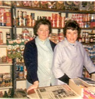
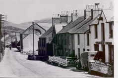

The Eifl Workmen Society Co-operative
The Co-op, or Stôr, as villagers called it, moved from Compton House to New Brighton. It paid a good dividend to customers. There used to be a vast wooden counter here and plenty of open space to show off the goods. Before the Co-op, John Jones ran a shop here. In the 1940s the shop was ran by his daughter Miss Jones. She had a noisy terrier that used to jump on the counter. It was a dark shop with few goods in it in that period.
(from Left to Right) Nancy Williams and Lena Pritchard behind the counter at the Co-op
Y Stôr, or the Co-op Llithfaen, Siop Arifog in earlier years.